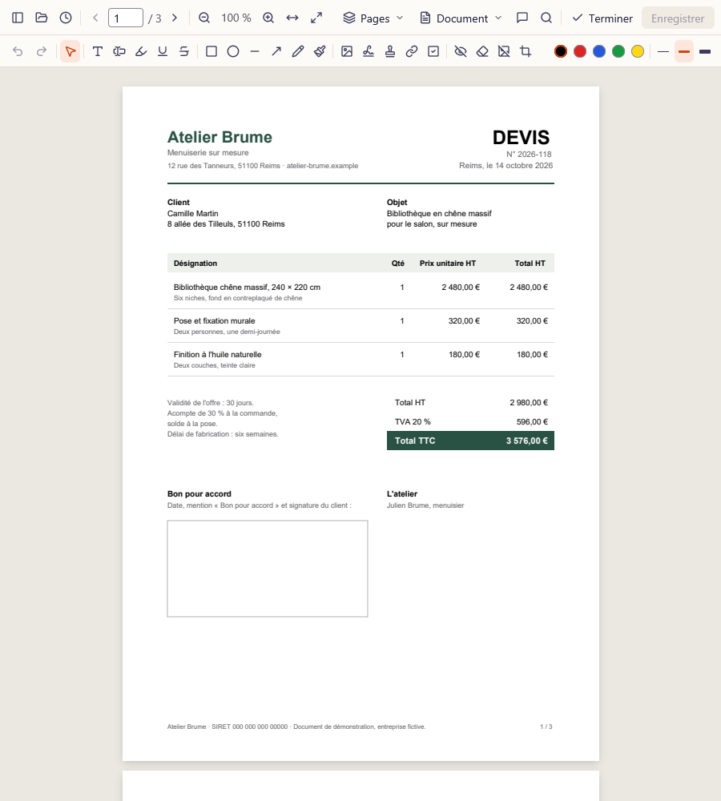

Un devis, du mail à la signature.
Un artisan vous envoie son devis en PDF. Voici ce qui se passe dans Recto, étape par étape, sans quitter votre ordinateur.


-
Il s'ouvre en lecture.
Comme une visionneuse : on lit, on zoome, on cherche un mot, on imprime. Rien ne bouge par erreur, et un double-clic suffit à ouvrir un PDF depuis l'Explorateur.
-
Modifier sort les outils.
Une barre d'outils et les miniatures des pages apparaissent. Chaque outil a sa lettre au clavier : T pour le texte, H pour surligner, S pour signer.
-
Surlignez ce qui compte.
Le délai de fabrication, en jaune. Surlignage, soulignement, formes, flèches et notes restent de vraies annotations PDF, lisibles dans les autres logiciels.
-
Signez, avec votre nom.
Tapez-le ici : il s'écrit sur le devis, dans le style et l'encre choisis. Rien n'est envoyé, même depuis cette page.
-
Caviardez avant de transférer.
Votre adresse n'a pas à suivre le devis partout. Sous le rectangle noir, le texte est retiré du fichier enregistré : on ne peut plus le copier ni le retrouver par recherche.
-
Enregistrez, c'est fini.
Le fichier est réécrit d'un coup, jamais à moitié. Il est resté sur votre disque du début à la fin, sans compte, sans quota, sans connexion.